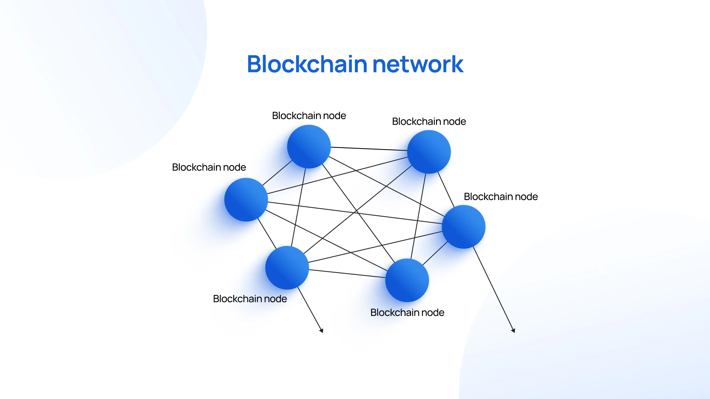
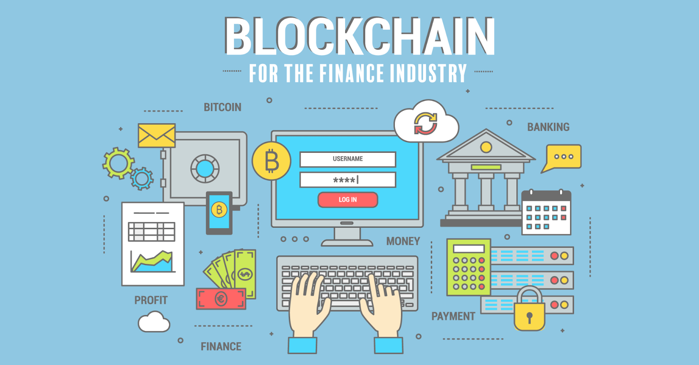

Що таке блокчейн?
Блокчейн — це цифрова технологія зберігання даних, яка забезпечує прозорість, незмінність і децентралізоване управління. Основна ідея полягає в тому, що інформація зберігається не в одному центральному сховищі, а розподілена між тисячами вузлів у глобальній мережі.
Дані в блокчейні організовані у вигляді ланцюга блоків. Кожен блок містить список транзакцій, хеш попереднього блоку та мітку часу. Після того, як блок створено і підтверджено, змінити його неможливо без зміни всього ланцюга.
Як відбувається перевірка правильності в блокчейні?
Для того щоб транзакція потрапила до блокчейну, вона проходить кілька етапів перевірки:
- 🔐 Криптографічний підпис: кожна транзакція підписується приватним ключем, що підтверджує її автентичність.
- 💰 Перевірка балансу: система перевіряє, чи має відправник достатньо коштів для здійснення транзакції.
- 📥 Мемпул: транзакція тимчасово зберігається у черзі очікування на підтвердження (мемпул).
- ⛏ Включення до блоку: майнери або валідатори перевіряють транзакції, знаходять правильний nonce та додають блок до ланцюга.
- 📡 Поширення у мережі: інші вузли перевіряють блок і, якщо він дійсний, додають його до власної копії блокчейну.
Такий механізм дозволяє досягти консенсусу без центральної влади, забезпечуючи безпечне і надійне середовище для передачі цифрових активів.
Застосування блокчейну
Блокчейн став основою для появи криптовалют, таких як Bitcoin та Ethereum, але його застосування цим не обмежується. Завдяки своїм властивостям блокчейн використовується у багатьох галузях:
- 🏦 Фінанси: швидкі та прозорі транзакції без банків.
- 🚛 Логістика: відстеження товарів і підтвердження їх автентичності.
- 🗳 Електронне голосування: захист від підробки та прозорість виборчого процесу.
- 🏥 Охорона здоров’я: зберігання та передача медичних записів з дотриманням конфіденційності.
- 🎨 NFT та авторські права: цифрова сертифікація унікальних об'єктів.
У майбутньому блокчейн має потенціал трансформувати державне управління, страхування, освіту та інші сфери, де важливі прозорість і довіра.
